汽配独立站购物流程与用户运营
2026年10月27日实测 · 10月30日补测，邮件观察至11月2日；LASFIT、Rough Country、WeatherTech到结账前，TuxMat与ExtremeTerrain补充特色模块。
三家把适配核对放在哪一步
购买前的三个关键差异
先把配置选对
LASFIT延续车型 · RC加购前补问 · WeatherTech逐题看图
在结账处讲清楚
待补货日期、免邮差额、优惠码，跟着购买动作出现
离站后继续触达
实收6封营销／弃购邮件；短信与公开社媒是不同后续入口
五个品牌，走到哪一步
三家主样本均未填写收货地址、付款或生成订单；收货、安装、真实售后和购后入群未体验。测试车参考2021 Ford F-150，RC储物配置为Yes、WeatherTech为No，价格不能直接作同规格比较。
离站之后的六天
北京时间 · D0为10月27日首次实测日；核验截至11月2日11:58。实心节点是实收邮件，空心节点是本窗口未检出，描边节点是网页动作。
LASFIT
2封营销 + 登录验证
23:02 抽奖登录验证后，当晚收到Instagram抽奖活动
Rough Country
3封弃购提醒
WeatherTech
1封产品营销
“未检出”只描述该测试邮箱与观察窗口。TuxMat、ExtremeTerrain未注册或订阅，不纳入欢迎邮件对比；三家均未识别到独立欢迎邮件。
展开逐封内容、准确时间与判定依据
从首次实测到后续邮件
D0为10月27日首次实测，并非所有品牌的注册日。下列日期、时间统一为北京时间；观察截至2026年11月2日11:58。
- D0 · 10/2714:26:20LASFIT
验证码登录
验证码邮件仅核验元数据，原实操已确认登录成功、Orders为空。验证码不属于Welcome；不展示验证码。
- D0 · 10/2718:32:50Rough Country
When Adventure Calls
首封弃购提醒：同一测试脚垫$179.95 × 1，CTA为VIEW CART。同一流程及序列标记支持首封弃购判断。
- D0 · 10/2723:02:45LASFIT
Halloween Giveaway
10/25–31活动，最高$300、3个奖项。CTA指向公开Instagram活动：关注@lasfitautolighting、点赞、评论装饰主题，可附车照。属于活动营销，非Welcome或新人券；仅阅读链接，未参与。
- D1–D2 · 10/28–29观察间隔三品牌
本次检索未见来信
该日期与品牌检索范围内未见匹配；不能据此判断品牌永远不发送邮件。
- D3 · 10/3018:33:29Rough Country
Your Gear is Waiting for You…
第二封弃购提醒：同脚垫$179.95 × 1，CONTINUE SHOPPING。同一流程的第二封标记；距首封3天39秒。10/30重新加购可能影响触发，不能反推后台唯一计时。
- D4 · 10/3103:20:39WeatherTech
Scratches Add Up. Protection Pays Off.
车辆防刮产品营销，涉及Paint Protection、Garage Wall Protector及BumpStep；无明确欢迎折扣。距10/27订阅成功约3天12小时33分，不能判作固定延迟Welcome。
- D4 · 10/3123:05:12LASFIT
Trick or Treat? Your Ride Deserves a Treat
万圣节全站20%公开券HLW2620，邮件称最后一天，涵盖脚垫、灯、踏板与越野灯；另列满$99 RapidShip、退货、客服及分期入口。属于历史活动，非新人专享。
- D5 · 11/118:34:25Rough Country
Play Now, Pay Later
第三封弃购提醒：同脚垫与恢复购物车入口，加入Affirm分期。同一流程的第三封标记，距第二封2天56秒。最低0% APR有资格条件，正文范围为0–36%；不能理解为人人免息或直接折扣。
六封营销或弃购邮件已核验全文，另有一封验证码邮件的元数据。两轮以品牌词与发件域检索全部邮件文件夹，范围10月26日至11月3日，均得到同7条且无下一页；这限定了本次观察范围，不能证明整个自动化序列已经结束。
触发动作 → 后续引导
Rough Country
弃购之后- 01留下未付款购物车
- 023封商品提醒
- 03邮件引导：返回购物车 / 分期（未点击）
- 04页脚邀请订阅短信（未订阅）
实收三封邮件；恢复链接与短信订阅未点击
LASFIT
活动带动公开互动- 01邮箱登录
- 02当晚抽奖邮件
- 03邀请关注 / 点赞 / 评论（未参与）
- 04另收：第4天节日折扣
公开Instagram活动，未参与；D4另收节日邮件，不表示由参与活动触发。
WeatherTech
订阅之后跨品类推荐- 01网页订阅成功
- 02约3天12小时后
- 03防刮场景推荐
- 04邮件引导：选购 / 偏好管理（未点击）
营销邮件已收到；账号注册与后续购买未确认
展开网页、会员、车主内容与渠道边界
- 网页选车与加购
- LASFIT沿用车型并解释配置；RC在加购前弹出适配检查；WeatherTech逐题给图片、最后回显答案。优惠、补货日期、免邮差额与额外费用发生在对应选购或结账位置，原截图见各品牌章节。
- 弃购邮件 → 短信
- RC三封弃购邮件页脚均有“Subscribe to text alerts”，同时提供公开社媒、在线客服、账户与安装商入口。本次未订短信、未收到短信，也未点击私人恢复购物车链接，不能写成短信流程或恢复结账已验证。
- 活动邮件 → 公开社媒
- LASFIT当天的抽奖邮件把读者引到Instagram活动帖，要求关注、点赞、评论，并鼓励发车照。这是公开社媒参与，不等于邀请进入Discord、WhatsApp等私密社群；本轮只核邮件内容与目标链接，没有参与活动。公开活动帖为LASFIT Halloween Giveaway ↗。
- 会员／车主内容入口
- LASFIT旧Elite表要求真实订单，10月30日旧入口404；RC车主投稿按车型、配置、产品、照片推进；TuxMat老客权益需历史订单；ET安装指南暂停。均按实际打开的页面记录，未完成会员加入、投稿审核或权益兑现。
- 产品邮件 → 下一品类
- WeatherTech从防刮场景推荐多个保护用品，邮件含偏好管理与转发朋友入口；已读邮件未见明确私密社群邀请。LASFIT后续节日邮件则用折扣与多品类入口引导回站。
关键对照
三种适配检查路径
- 车型选择2021 → Ford → F-150
- 信息沿用后续商品带着已选车型
- 结构解释实车照片确认座椅与储物
- 直接选商品选择前后排、座椅与储物
- 加购前补问弹出 Fitment Finder
- 检查结果CHECK FIT 后确认适配
- 逐题看图驾驶室、地板、座椅、储物
- 完成四题每题可放大图片查看
- 完整回显商品页列出全部配置答案
- 适配信息如何继续使用
- LASFIT把车型带到商品与咨询；RC在加购前检查；WeatherTech回显年款、驾驶室、地板、座椅及储物。保存车型与确认具体配置是两项任务。
- 库存与价格怎样说明
- RC的待补货提示跟到结账；WeatherTech给出$1.10免邮差额和估算运费。无真实地址时的合计不能视作最终账单。
- 邮件究竟验证了什么
- 已实收RC三封弃购提醒、LASFIT两封活动营销及WeatherTech一封产品营销；未识别独立欢迎信，也未验证购后自动化或增量成交。
- 老客与会员的差异
- TuxMat用历史订单人工识别老客；ET以年费、奖励时点和到期日安排回访。低频脚垫购买与持续改装的需求不同，权益成本和真实使用价值需要分别衡量。
- 内容与活动能否参与
- RC投稿按车辆、配置、产品、照片组织，但未提交；LASFIT旧Elite入口404；ET安装指南暂停。入口、资格、授权和兑现均需分别核验。
01LASFIT
选车与适配
10月27日从2021 → Ford → F-150进入，后续商品继续带着这台车。10月30日补看默认配置，发现“车型适配”和“车内结构选对”仍要分两步处理。
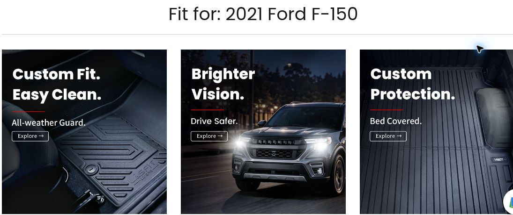
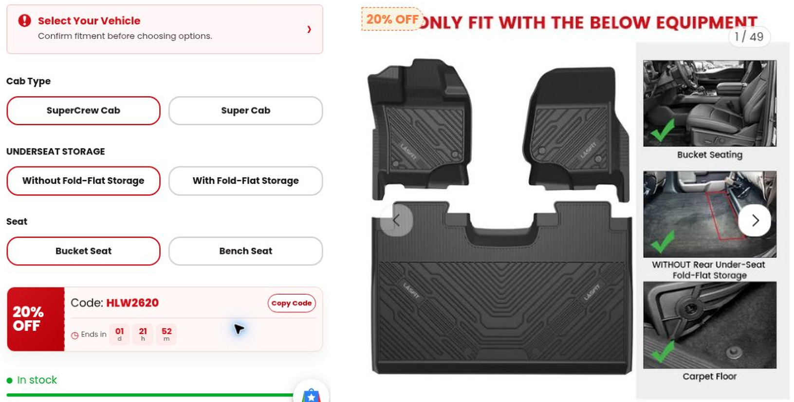
选车记录可以减少重复搜索，但不能代替SKU需要的结构信息。红框记录的是当时默认选项；2021 F-150适配尚未重新确认。
可借鉴同类汽配站可以沿用顾客已选车型，并用2–4张实车局部图确认关键结构。加购前回显“年款＋驾驶室＋座椅＋储物”，不要让一个绿色勾遮住仍需核对的条件。
购物车与账号
10月27日从加购走到结账，公开优惠码可以自己输入；邮箱验证码登录成功，Orders中没有订单。买前身份和订单身份没有被混成一件事。
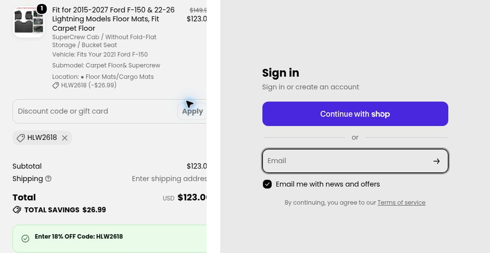
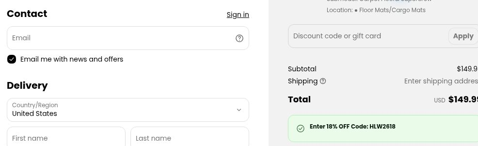
10月30日商品页改为20% OFF、代码HLW2620。补测仅查看新码，未应用。新码与10月27日实际使用的优惠分别记录。
公开券放在购物车和结账附近，省去到外面找码；验证码降低了创建密码的成本。相应的风险是默认营销勾选容易被忽略，同类汽配站应让用户清楚知道自己同意了什么。
邮件补核 10月27日15:02:45 UTC收到LASFIT Halloween营销，不能标成Welcome欢迎信。
服务与老客关系
Contact与Support先按顾客的问题分类；旧Elite表单则尝试识别已有订单及后续需求。它们比单纯多收一个邮箱更接近持续服务，但历史入口必须复核。
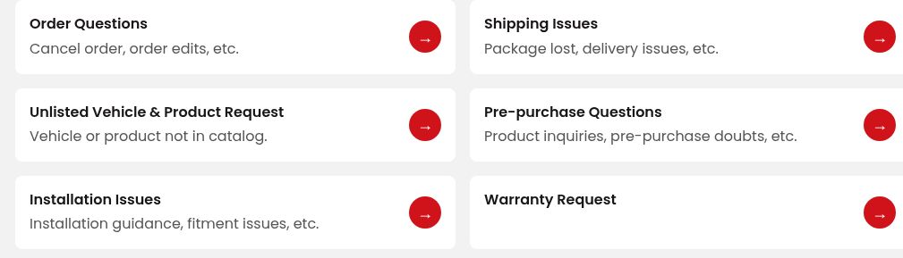
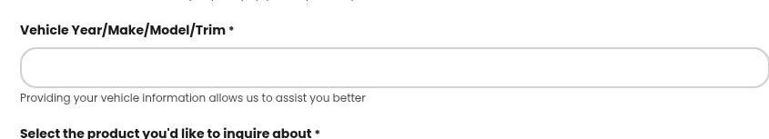
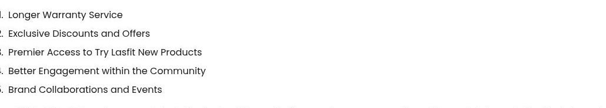
当时实际看到的Elite表需要真实订单号，还问第二辆车、偏好权益和下一次想装什么。没有真实订单，因此未提交。这些字段可用来理解下一次需求，不能直接当作忠诚度分数。
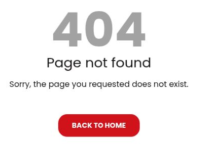
可借鉴同类汽配站可把已知车型自动带进咨询，服务后再自愿补充下一次需求。若要做老客项目，先保证入口、处理人和权益履约稳定；不要先用“会员人数”验收。
02Rough Country
配置与适配
10月30日重新打开时，当前购物车为空。选择前后排、Bucket Seats、Factory Under Seat Storage Yes后，M-51515为$179.95；点击加购先出现Fitment Finder。
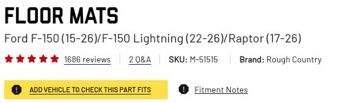
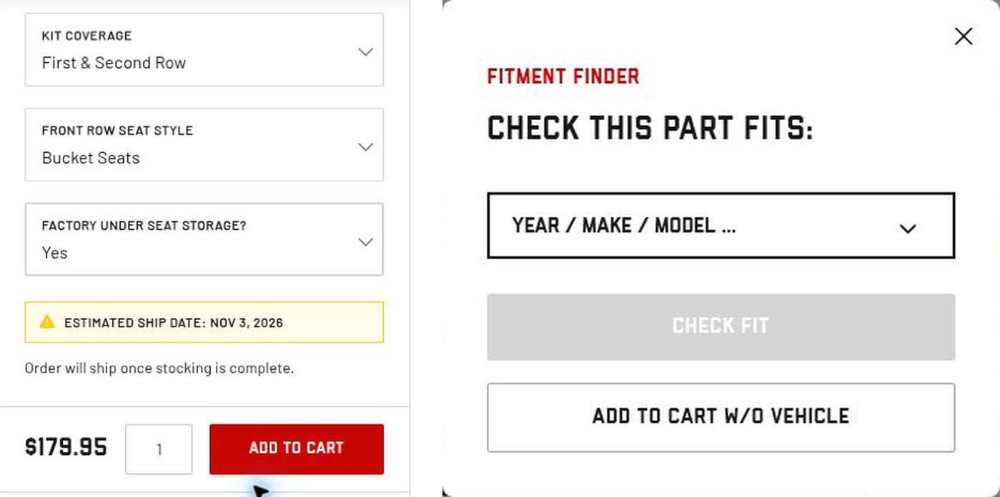
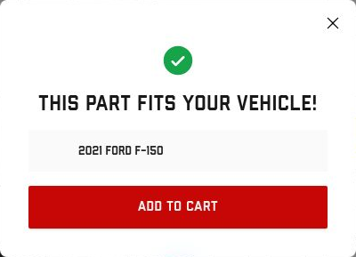
这种“到加购再补问”能接住直接落到商品页的顾客。相比WT的逐题照片，它更短；但本例储物选项为Yes，结论范围限于该配置。
可借鉴同类汽配站可把适配检查放在高风险动作前，而非强迫所有首页访客先填车。若允许跳过，要明确后果，不能把未核实车辆展示成适配成功。
缺货与弃购
10月27日商品为SHIPPING SOON，仍能加购。10月30日同页改成预计11月3日发货，商品和购物车继续说明补货完成后寄出。信息更新比藏在政策页更容易被看到。
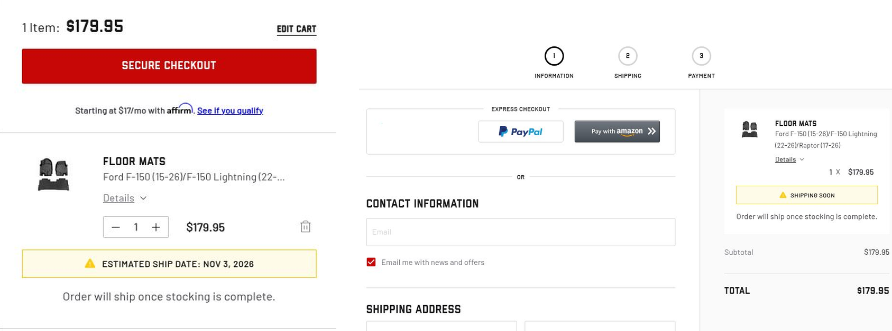
两张图对应不同日期。旧轮已经进入结账并填授权邮箱；新轮只加购，没有再次填邮箱或走结账。10月30日没有保留旧Garage与Cart，反映的是本次会话状态，无法外推所有用户。
弃购邮件已实收，后续共核到三封
10月27日10:32:50 UTC实际收到When Adventure Calls。邮件带出测试脚垫$179.95 × 1和VIEW CART，邮件头及恢复链接参数支持它是弃购流程。 私密恢复、退订和追踪链接不在本文展示。
随后又收到10月30日和11月1日两封同一流程的弃购邮件，详见下方时间线。三次真实到达仍不能证明完整发送序列已结束，或带来了增量成交。
可借鉴同类汽配站若试弃购提醒，应先把库存和预计发货同步到邮件；同时比较未发送对照组、有效回访和退订，别用“发了多少封”代替结果。
车主内容
10月27日打开Customer Builds，页面保留2021 Ford F-150。页面展示与当前选择相关的车主改装样本。
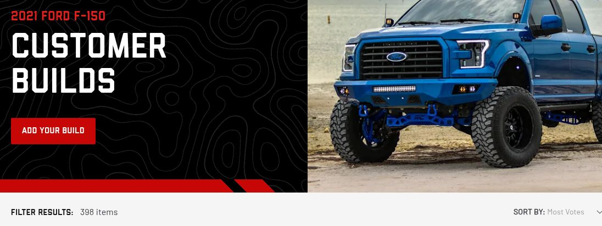
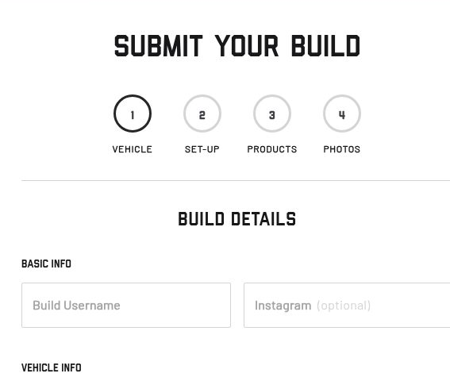
车主内容在这里承担两件工作：帮新客想象“同一台车还能怎么装”，也给已有车主一个结构化分享入口。车型、产品和照片能对应起来，内容才方便被下一个人使用。
本次没有提交作品，也未核验投稿授权全文、审核时长、奖励履约或发布结果。公开可看案例不等于可任意转载到同类汽配站广告。
可借鉴同类汽配站故事可按车型、产品、使用情境和安装难点归档，优先回答买前顾虑。把作品真实性、使用渠道、授权期限和奖励披露一起验收，不能只数素材条数。
03WeatherTech
配置问答
10月30日重新走FloorLiner HP配置：SuperCrew、Carpet Floor、Bucket Seating、No Fold-flat storage。每题有照片、View Larger和Continue；解释入口说明这些问题用于保证贴合。
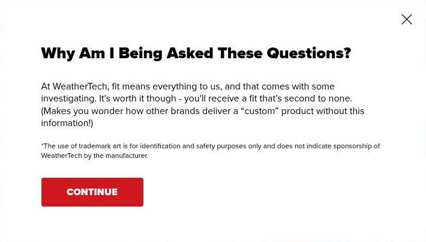
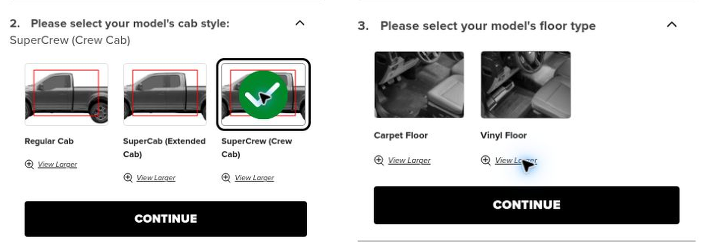
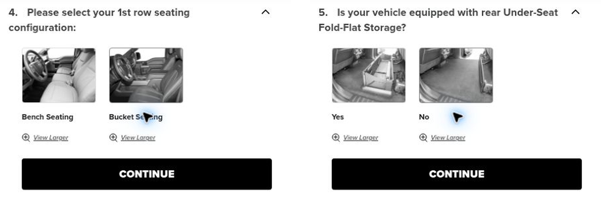
可借鉴多四步确实增加点击，但每步都有明确的SKU意义。同类汽配站若需要追问，应解释原因、让用户看得懂，并在最后回显答案；不要问完又让用户重填。
适配与购物车
完成四题后，商品页显示Guaranteed Fit及全部答案；现存购物车仍是一件同配置商品。免邮差额明确为$1.10。
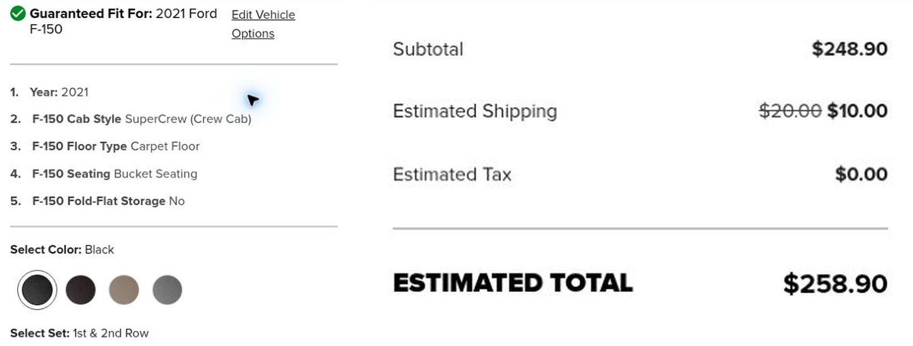
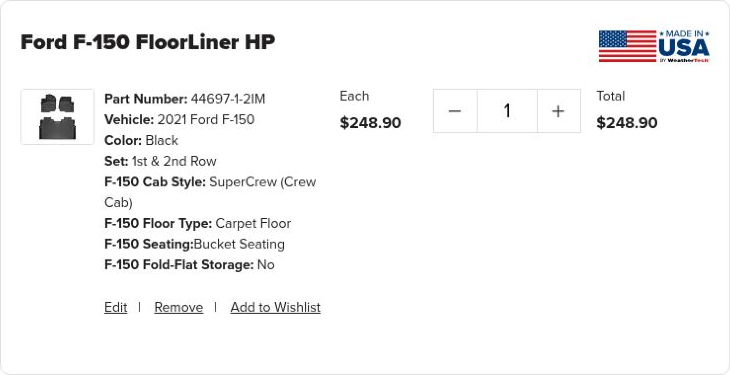
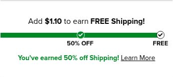
旧轮10月27日页面估算为$268.90，不能与补测新运费混成同一报价。RC还带原厂储物Yes，因此三个价格也不构成严格同款比价。
可借鉴精确差额能帮助顾客判断，但为免邮加的东西也要有真实用途。同类汽配站的推荐宜从同车已买品类和下一次需求出发，别把客单价上升当作用户更满意。
结账与保存车型
10月27日Recent Vehicles中有刚选的车，Save Vehicle引到账号；旧注册结果没有确认。10月30日当前未登录，只查看空注册表，没有重复注册或订阅。
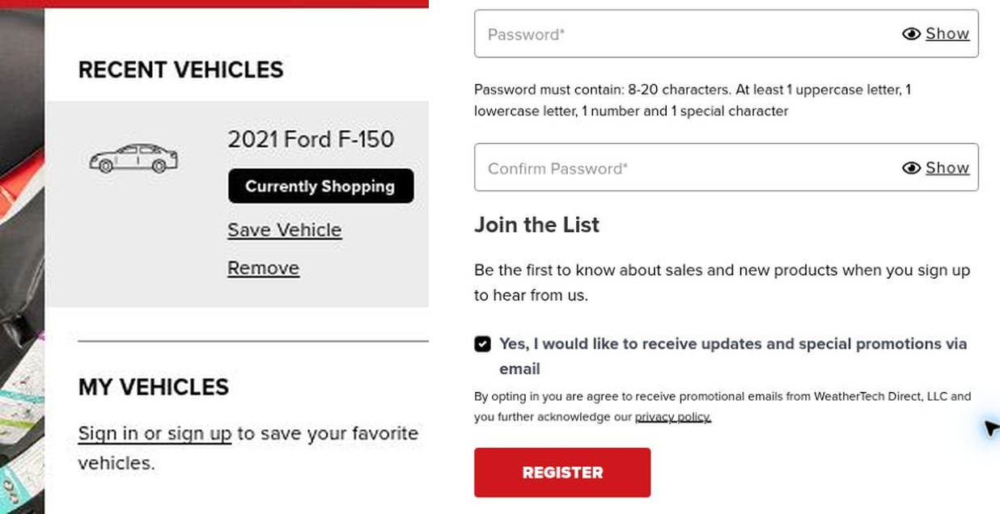
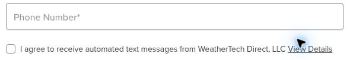
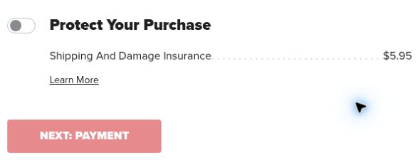
无需账号即可浏览和找回近期车型，长期保存则需要登录。但会话记忆、账户保存和注册成功必须分开统计。注册邮件预勾，也不能与短信和保险未勾合并成“全部主动选择”。
10月27日Mailing List在06:48 UTC出现订阅成功页。10月30日上午旧核查尚未检出匹配；后续邮件已补核：北京时间10月31日03:20收到防刮保护用品营销，详见时间线。订阅成功、账户注册成功和收到营销邮件分别记录。
可借鉴同类汽配站可提供免登录车型记录，并说明长期保存的价值。账户、订单通知、营销订阅和额外费用应各有清楚状态。
04TuxMat
老客与未覆盖车型
这家补测了老客优惠和车型需求模块。10月30日从FAQ读老客权益，再打开Model Request Form；没有假称老客、发邮件领券或提交需求。
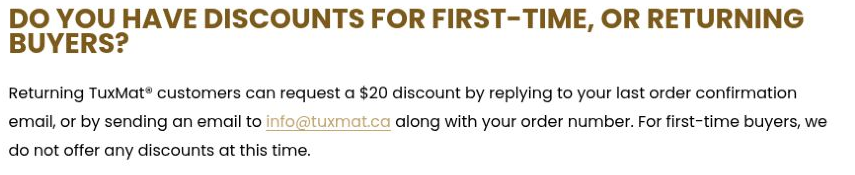
需求表上半部要求姓名、Email、Year、Make、Model，再到Powertrain与Trim。下图保留最有差异的下半部：具体想买哪个覆盖区域。所有字段和选项都留空。
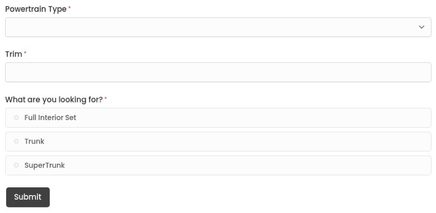
老客身份由订单支持，不必先养积分习惯；代价是还要人工邮件申请，实际审批和到账未测。需求表则把“没有我的车”拆成动力、配置和想买哪一区域，资料有机会被产品团队使用。
阅读中出现产品更新、perks、first dibs的订阅弹窗，已关闭、未订阅。车型表首次仅加载说明，刷新后正常；同车选择到SuperCrew／无储物后未落到商品页，因此不能称完整选购顺畅。
可借鉴同类汽配站可以让老客用已有订单被识别，再提供安装帮助、第二辆车或下一品类的入口。未覆盖车型需求应有接收人、状态与回复规则，否则只是多存一份表。
05ExtremeTerrain
会员与活动
只浏览VIP条款和安装指南投稿入口，未付费入会。ET是持续改装商城机制样本，不是这次F150脚垫的同款价格竞争样本。
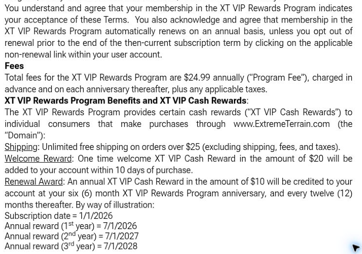
奖励为促销余额而非现金：非自有品牌5%、自有或关联品牌10%、Open Box 20%，有排除品；合格商品发货后24小时内发放，发行90天后到期。没有实测到账、兑换或取消。
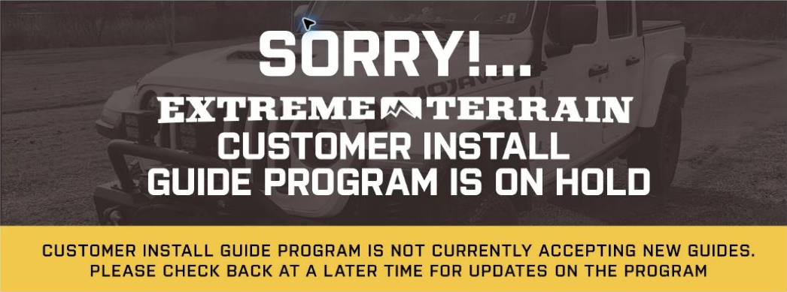
欢迎奖励、半年时点和到期日能安排回访，但低频耐用品未必有足够需求承担年费与到期压力。历史安装投稿宣传也不能当作当前仍收稿或发奖。
可借鉴同类汽配站付费或积分机制应依据用户一年中的真实服务和购买需求决定。活动验收要查“还能不能提交、谁处理、何时履约”，不能只查链接还在。
体验边界
购买前 + 邮件到达
- 三家主样本选车、商品、加购、结账前
- LASFIT登录与WeatherTech订阅成功
- 6封营销／弃购邮件的时间、内容、入口
- 27张原图，35个真实网页面板
支付后 + 渠道加入
- 支付、订单、物流、收货安装与真实售后
- 短信订阅、私密社群实际加入
- 邮件按钮落地、优惠兑换与恢复结账
- WeatherTech注册结果、邮件序列终点
展开范围说明
已核实：三家主样本的真实选车、商品、加购和结账前操作，LASFIT验证码登录，WeatherTech订阅成功页，以及上述邮件的实际到达时间、内容和引导入口。原网页截图共27张、35个画面面板；本轮邮件新增的是全文核验记录，不冒充新网页截图。
尚未体验：实际支付、生成订单、物流通知、收货安装、真实售后及购后入群；WeatherTech账号注册成功仍未确认。没有订阅手机号或实际加入私密社群，也未验证邮件按钮落地、优惠兑换、恢复结账效果及后续序列终点。首次登录、订阅与加购证据的精度不同，不能倒算秒级注册延迟。
本观察窗口未识别到独立欢迎邮件，不能等同于品牌没有欢迎流程。TuxMat与ExtremeTerrain本次未注册或订阅，不能根据未见来信评价它们的欢迎流程。邮件内容与实际点击落地、购买后体验分开验收。
官方入口
以上观察整理自《汽配独立站购物流程与用户运营》2026年10月30日原报告；网页为公开整理版本。27张内嵌图包含35个网页画面面板。品牌公开承诺与页面操作结果分别陈述，未以公开页面推断竞品内部业绩。